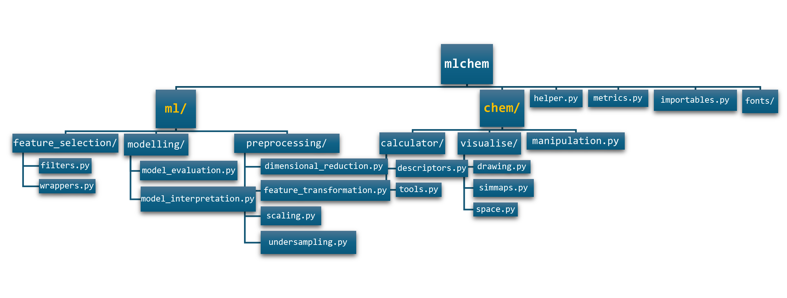
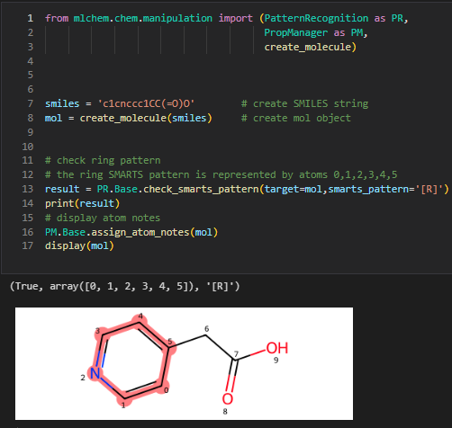
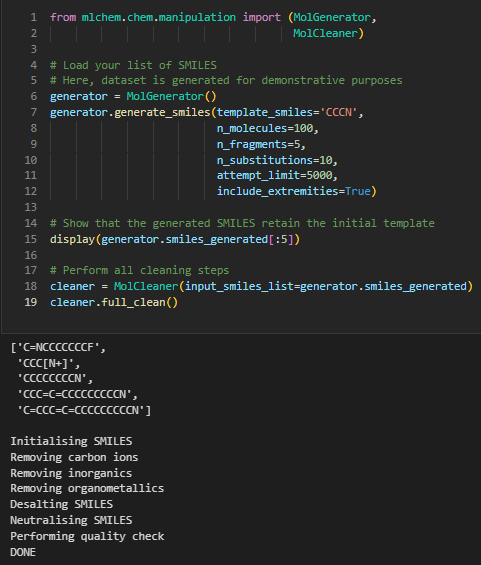
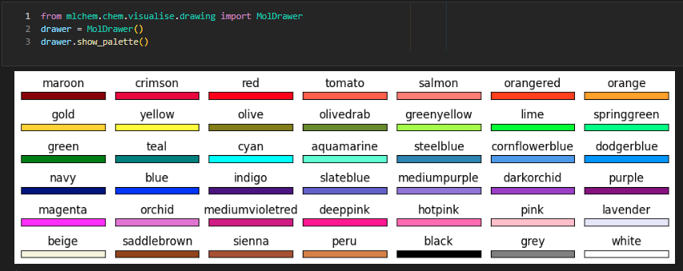
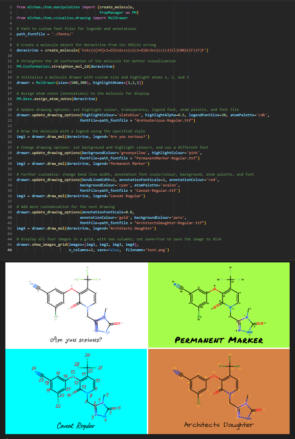

mlchem¶
mlchem is a Python cheminformatics library designed for the scientific community. It provides a comprehensive set of tools for data handling, molecule manipulation, drawing, machine learning, and plotting. The library has been tested for python 3.11, 3.12 and 3.13.
Documentation¶
Available at https://ubiquitous-adventure-ggl1ng1.pages.github.io/
Features¶
Data Handling: Efficiently manage and process chemical data, including loading, cleaning, and transforming datasets.
Molecule Manipulation: Tools for manipulating molecular structures, such as adding or removing atoms, modifying bonds, and generating molecular conformations.
Pattern Recognition: An extensive list of functions to search for specific structural patterns.
Molecule Drawing: Visualise molecules with customisable drawing options, creating high-quality images for presentations and publications.
Machine Learning: Implement machine learning models for cheminformatics, including training, evaluating, and deploying models to predict chemical properties and activities.
Feature Analysis and Interpretation: Interpret model features and provide insightful plots.
Architecture¶

Modules¶
chem.visualise/¶
space.py: Computes and visualises datasets in a lower-dimensional space.
simmaps.py: Generates “rdkit-like” similarity maps based on atomic importance weights.
drawing.py: Handles the drawing of molecular structures with many customisable options.
chem.calculator/¶
tools.py: Provides numerous tools for chemical calculations.
descriptors.py: Calculates various descriptors for molecules, including RDKit and Mordred descriptors, atomic descriptors, chemotypes, fingerprints, and some quantum chemistry properties.
chem.manipulation.py¶
The mlchem.chem.manipulation module offers a variety of tools for creating, converting, manipulating molecular structures, generate new molecules and recognise molecular patterns.
ml.feature_selection/¶
filters.py: Provides functionalities for filtering features.
wrappers.py: Offers simplified interfaces for feature selection.
ml.modelling/¶
model_interpretation.py: Provides tools for interpreting machine learning models.
model_evaluation.py: Contains tools for evaluating machine learning models.
ml.preprocessing/¶
dimensional_reduction.py: Provides functionalities for compressing dataframes using various dimensionality reduction techniques.
feature_transformation.py: Expands features to polynomial features.
scaling.py: Provides functionalities for scaling dataframes using different scaling techniques.
undersampling.py: Contains techniques for handling imbalanced datasets.
Installation¶
To install mlchem, open your command prompt and use the following command:
pip install git+https://github.com/seacunilever/mlchem.git
Alternatively, latest release from PiPy (not available yet):
pip install mlchem
Development installation, to modify the code or contribute with some changes:
# Clone the repository
git clone https://github.com/seacunilever/mlchem
cd mlchem
# (Optional: create a virtual environment)
python3 -m venv _venv
. ./_venv/bin/activate
# On Windows:
use .\_venv\Scripts\activate
# Make an editable install of mlchem from the source tree
pip install -e .
# and install requirements
pip install -r requirements.txt
Usage¶
Here’s some basic examples of how to use mlchem:
calculate rdkit descriptors for two molecules¶
from mlchem.chem.manipulation import create_molecule
from mlchem.chem.calculator import descriptors
mol1 = create_molecule('c1ccccc1CCCO')
mol2 = create_molecule('CCCCCN')
desc_df = descriptors.get_rdkitDesc([mol1, mol2],include_3D=True)
pattern recognition¶

de novo molecule generation and cleaning¶

show pre-defined colour palette¶

explore molecule drawing options¶

More examples in the examples folder.
Building the documentation¶
The documentation is built with Sphinx using the autodoc and myst-parser extensions. Source files live under docs/source/, build output lands in docs/build/html/, and a small post-build script (docs/_publish.py) mirrors that build into docs/ so GitHub Pages always serves the latest version.
Single-source content:
docs/source/welcome.md{include}s this README, so you only editREADME.md— never duplicate content into the welcome page.
Prerequisites (one-off): the documentation toolchain is part of requirements.txt, but if you only want the doc deps:
pip install sphinx myst-parser
To rebuild and publish the docs, run the commands from the docs/ directory (NOT from docs/source/ — source is the value of SOURCEDIR inside the Makefile / make.bat, not the working directory):
# from the repository root
cd docs
# wipe previous build artefacts (clears docs/build/)
make clean
# build HTML and automatically mirror docs/build/html/ -> docs/
make html
make html runs Sphinx and then invokes _publish.py, which:
removes every stale published asset at the root of
docs/(everything exceptsource/,build/,Makefile,make.bat,_publish.py,.nojekyll);copies the freshly built site from
docs/build/html/intodocs/;ensures the
.nojekyllmarker is present so GitHub Pages keeps_static/and_sources/.
If you ever build with a raw sphinx-build invocation, run the mirror step manually:
make publish
On Windows the same targets are dispatched through make.bat, so the commands work in both cmd and PowerShell as long as sphinx-build and python are on the PATH.
Common pitfalls: running
make htmlfromdocs/source/(noMakefilethere → “no rule” / “missing Makefile” error), or typingmake build(the Sphinx target ishtml;buildis the output directory, not a target).
Contributing¶
We welcome contributions to mlchem. Users are free to propose new functionalities, flag new bugs, fix old bugs and issue pull requests. Please consult the guide (work in progress) on how to properly submit pull requests.
Third-Party Dependencies¶
This project uses the SELFIES Python package for molecular string representations.
SELFIES is licensed under the Apache License 2.0. In accordance with its license, the relevant license is included in this repository.
This project uses and adapts code from the RDKit cheminformatics toolkit, which is licensed under the BSD 3-Clause License.
License¶
This project is licensed under the BSD-3 License.
Note: This project includes components licensed under the Apache License 2.0 (e.g., the SELFIES package), as well as source code taken and adapted from RDKit library.
Acknowledgements¶
Special thanks to the Safety, Environmental & Regulatory Science (SERS) Department at Unilever.